A Brief History of AI
From Foundations to Generative AI
- Presenter:
- Core idea: to understand today’s AI, we must know its history and shifts
“A generation which ignores history has no past – and no future.”
— Robert A. Heinlein
The Elusive Definition of Intelligence
- “As soon as it works, no one calls it AI anymore.” — John McCarthy
- Intelligence is a moving target as technologies become routine.
- Today: AI literacy is no longer only for computer scientists.
- Students in all disciplines must:
- Evaluate when AI is appropriate
- Defend or challenge model choices for their domain
Roadmap of This Talk
- Foundations of Computing
- Traditional programming vs. data‑centric learning
- The Scaling Problem
- Data, storage, and compute infrastructure
- The AI Landscape
- AI vs. Machine Learning vs. Deep Learning
- Historical Milestones
- From early neural nets to Transformers
- Trust, Safety & Boundaries
- Adversarial risk, privacy, and ethics (high‑level preview)
SECTION I
Historical Evolution of AI
AI Roots (1940s–1950s)
Foundational ideas:
- 1943 – McCulloch & Pitts
- First mathematical model of a neuron
- Basis for artificial neural networks
- 1950 – Alan Turing
-
Proposes the Turing Test:
-
1956 – Dartmouth Workshop
- McCarthy, Minsky, Rochester, Shannon
- Coins the term “Artificial Intelligence”
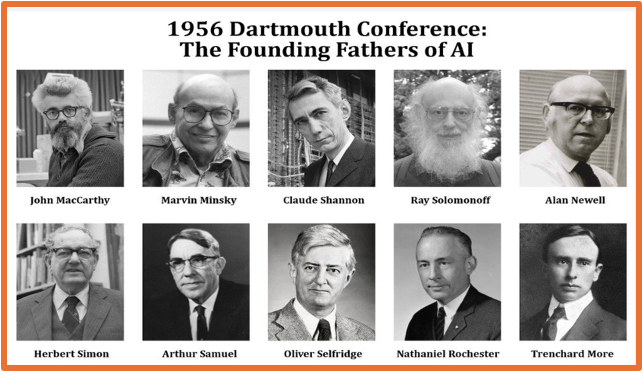
Mapping the AI Landscape
Nested vocabulary (conceptual diagram):
- Artificial Intelligence
- Rule‑based systems, search, logic
- Machine Learning
- Linear/logistic regression, random forests, SVMs
- Deep Learning
- MLPs, CNNs, RNNs, LSTMs, autoencoders
- Generative AI
- GANs, Transformers, Large Language Models (LLMs)
Not all AI is ML; not all ML is deep learning; not all deep learning is generative.
Nested vocabulary (conceptual diagram)
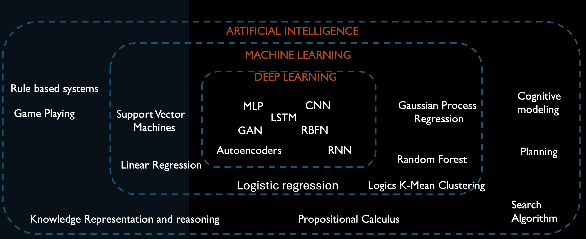
The McCulloch-Pitts Neuron (1943)
- Inspired by neuroscience: The brain is composed of neurons interacting via synapses, transmitting either excitatory or inhibitory signals
- The neuron can be thought of as a binary classifier using binary input
- A neuron
- fires if: sum of inputs reaches threshold
- unless inhibited by other inputs
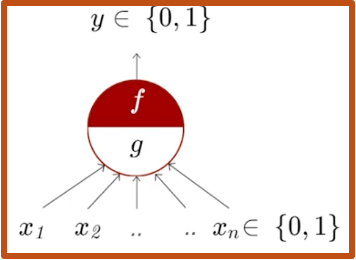
The Perceptron (1957)
- Frank Rosenblatt's original work on the perceptron in the late 1950s laid the groundwork for subsequent research in neural network theory and applications.
The perceptron model demonstrated the potential of neural networks for pattern recognition tasks
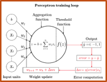
General Purpose Solver (GPS) (1957)
- GPS by Herbert Simon, J.C. Shaw, and Allen Newell
- a computer program created intended to work as a universal problem solver machine
- employs heuristic search to explore possible solutions
ability to reason and make decisions based on logical inference and problem-solving strategies
Expert Systems: Eliza (1966) - short video
Expert Systems: Eliza (1966) - short video

Expert Systems: SHRDLU (1968) - short video

The Perceptron (controversy) - Minsky and Papert (1969)
- A single perceptron is unable to compute the XOR function, as it’s not linearly separable
Minsky and Papert. “Perceptron: An Introduction to Computational Geometry”, book 1969
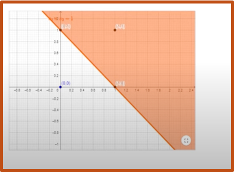
Expert Systems: Symbolic AI at Scale
- Dendral (1960s) : Helped chemists identify molecules from mass spectra.
- MYCIN (1970s) : Diagnosed bacterial infections, recommended antibiotics.
- XCON (late 1970s–1980s) : Configured VAX computers at DEC; saved tens of millions of dollars.
- Deep Blue (1990s) : Defeated world chess champion Garry Kasparov using search + rule‑based evaluation.
These systems showed symbolic AI can work very well in narrow, structured domains.
The Multi-layer Perceptron
Training before MLP was challenging and less systematic - Perceptron Learning Rule - Heuristic Methods - Optimization Techniques - Evolutionary Algorithms
Paul Werbos in 1974 laid the foundation
for training neural networks with multiple layers of neurons, which became known as the backpropagation algorithm
NetTalk by Sejnowski and Rosenberg 1986
The NetTalk system consisted of
- a three-layer neural network
- trained on a dataset of English words and their - corresponding phonetic representations
- NetTalk learned to map input letters to output phonemes
Birth of Deep Learning
Deep learning models:
-
Stack many hidden layers to learn complex features from raw data.
-
Forward pass
- Data flows through layers to produce an output
- Compute loss vs. ground truth
- Backward pass (backpropagation)
- chain rule to compute gradients layer by layer
- Update weights to reduce loss
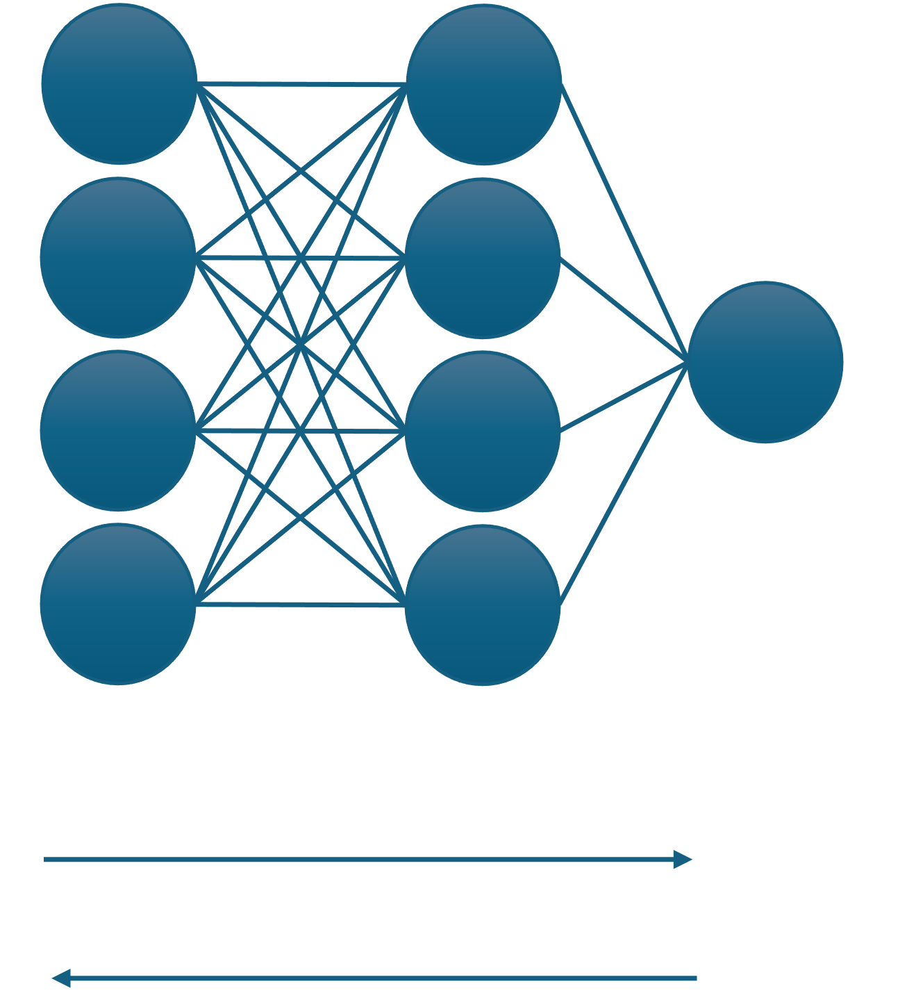
Evolution of Deep learning
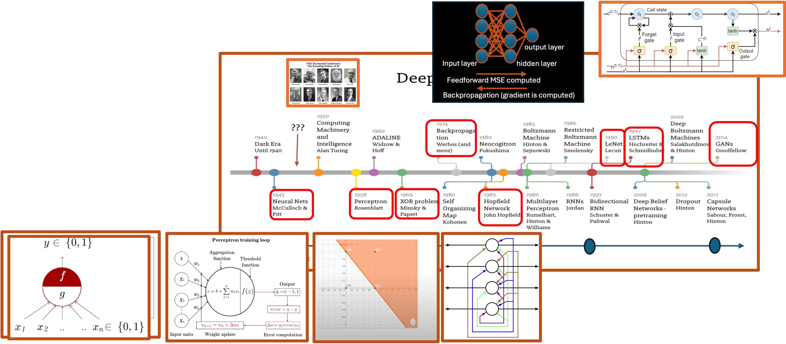
The History of Artificial Intelligence [Documentary]

From Hand‑Crafted to Learned Features
Evolution in computer vision:
- Early era:
- Hand‑crafted features + probabilistic models (e.g. HMMs for sequences)
- Deep learning era:
- Convolutional Neural Networks (CNNs):
- Automatically learn spatial patterns (edges, textures, objects)
- Dramatically outperform manual feature pipelines
CNNs shifted vision from feature engineering to feature learning.
Convolution Neural Network (1998)
LeNet‑5 (Yann LeCun)
- Introduced:
- Local receptive fields
- Shared weights (convolutions)
- Subsampling / pooling
- Achieved ≈ 99% accuracy on digit recognition
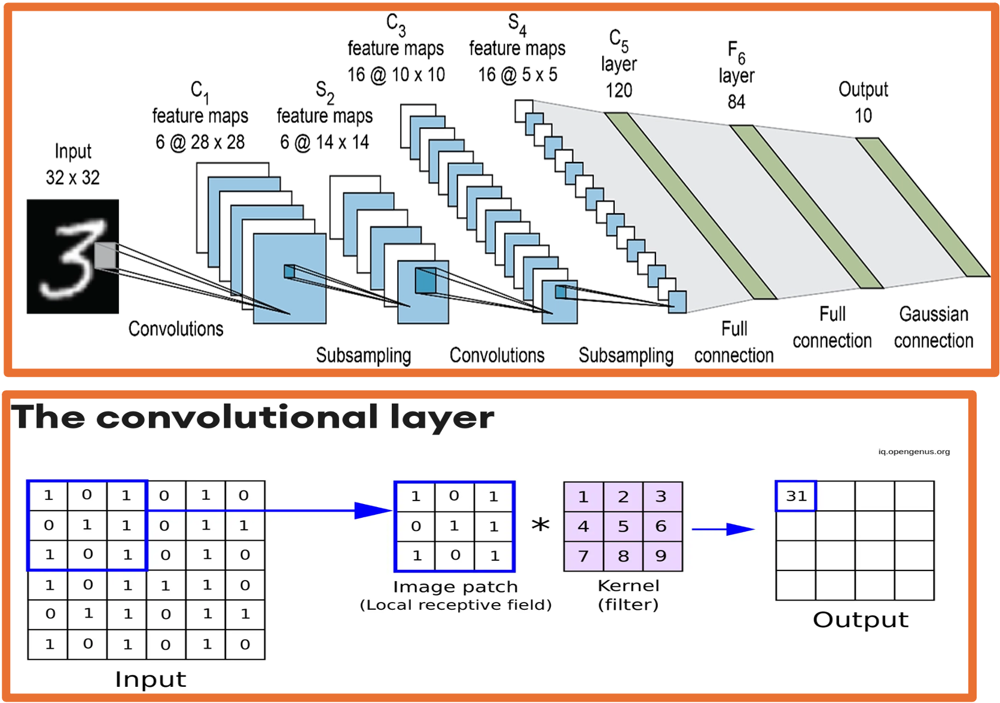
Convolution Neural Network (1998)

Recurrent Neural Network (1997)
- A recurrent neural network used in speech recognition and NLP.
- RNNs recognize data's sequential characteristics and use patterns to predict the next likely scenario
Solves the problem - vanishing and exploding gradients
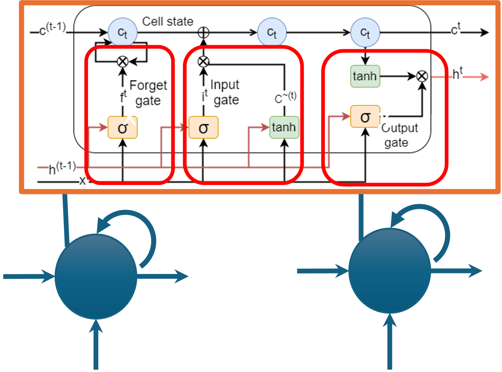
CNN, RNN, LSTM
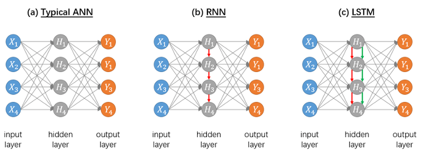
CMNIST dataset (1998)
- Handwritten digits 0–9
- Became a standard benchmark for image recognition
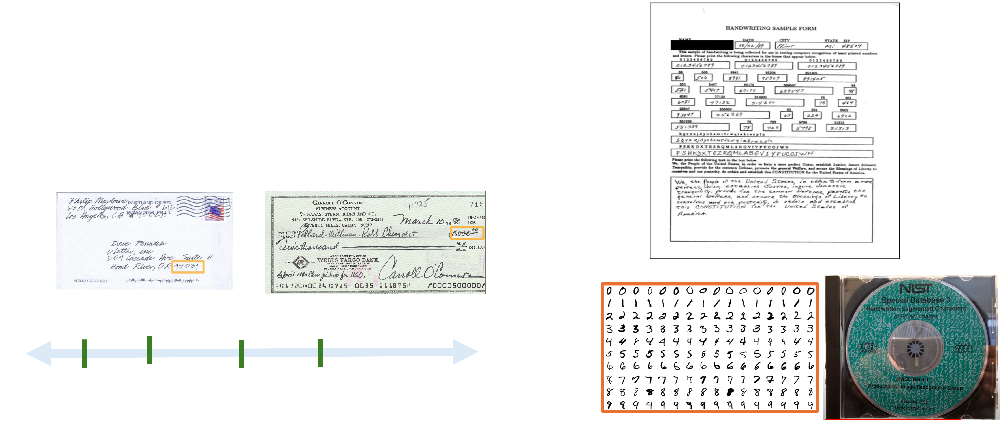
Beyond Digits: CIFAR Datasets
CIFAR‑10 / CIFAR‑100 (2009)
- Small natural images across many classes:
- Animals, vehicles, everyday objects
- Posed a harder challenge than MNIST:
- Complex backgrounds
- Varying lighting, viewpoints, clutter
These datasets tested whether models could generalize to realistic, high‑variation images.
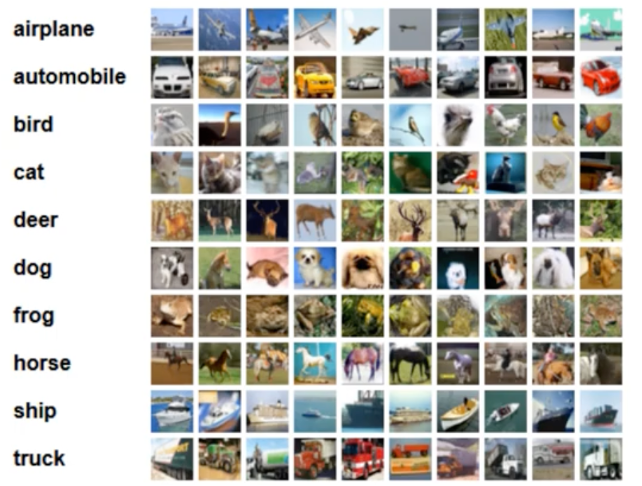
ImageNet: The Deep Learning Breakthrough
ImageNet Large Scale Visual Recognition Challenge (ILSVRC)
- Annual competition (2010–2017)
- Millions of images, 1000+ categories
2012 Inflection Point
- AlexNet (Krizhevsky, Sutskever, Hinton):
- Deep CNN, trained on GPUs
- Sparked the modern deep learning boom in vision and beyond.
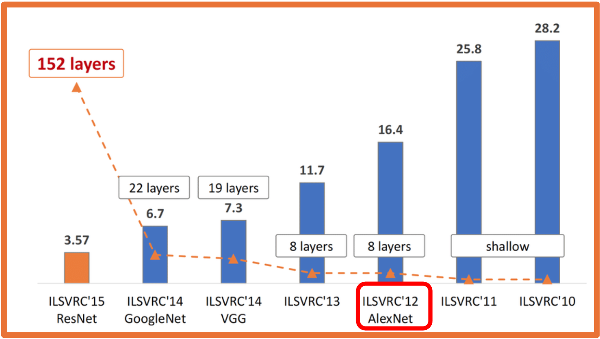
Reinforcement Learning
In reinforcement learning problem are broken down into a continuous loop involving five main components: - Agent: The AI player or decision-maker (e.g., a self-driving car software, or a chess bot). - Environment: The world the agent interacts with (e.g., the city streets, or the chessboard). - State ($S$): The current situation or configuration of the environment. - Action ($A$): The moves or choices available to the agent. - Reward ($R$): The feedback from the environment telling the agent how well it did (can be positive or negative).
Deep Reinforcement Learning Milestones
Deep Q‑Networks (DQN) – 2013
- Mnih et al. (DeepMind)
- Combined: Deep neural nets + Q‑learning Learned Atari games directly from pixels via trial and error.
AlphaGo – 2016
- DeepMind’s system defeated Lee Sedol, Go world champion.
- Combined: Deep learning, Monte‑Carlo tree search, reinforcement learning
- Showed deep RL can master extremely complex strategy spaces.
Deep Reinforcement Learning - short video

Google DeepMind's Deep Q-learning playing Atari Breakout!

Beyond classification
- MLPs or CNNs used for classification—the architecture was a direct, continuous mapping from input to output.
- The Structure: Input $\rightarrow$ Hidden Layer 1 $\rightarrow$ Hidden Layer 2 $\rightarrow$ Output.
limits:
good for classification but not for sequence-to-sequence tasks (like translating) or unsupervised representation learning
Encoder–Decoder Architectures
Why encoder–decoder?
- Encoder:
- Compresses high‑dimensional input (image, audio, text)
into a compact feature representation. - Decoder:
- Expands that representation into a new output format:
- Pixel‑wise segmentation map / Translated sentence / Synthesized audio
Example:
- U‑Net (2015): Encoder–decoder CNN for medical image segmentation
- Produces pixel‑level output from image inputs.
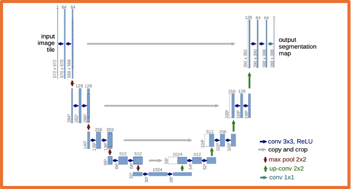
SECTION II
Generative AI & Large Language Models
- Generating new content, not just classifying data
- Multi‑modal synthesis (text, image, audio, code)
- GANs, Transformers, and the rise of LLMs
What Is Generative AI?
Definition
- Subfield of AI focused on creating new data:
- Natural language text
- Images and video
- Audio and music
- Code and other artifacts
High‑level flow
- Massive training data → GenAI model → new synthetic outputs
- Model learns patterns, not exact copies of training data.
Multi‑Modal Output Capabilities
Modern generative models can produce:
- Audio
- Text‑to‑speech, music composition, voice cloning
- Video
- Short clips from text prompts, trailer generation, restoration
- Images
- Concept art, style transfer, in‑painting, design assets
- Text
- Creative writing, summarization, translation, code generation
Same core idea: map a prompt → a new artifact.
Generative Adversarial Networks (GANs)
Two‑network competitive setup:
- Generator: Tries to create fake samples that look real.
- Discriminator: Tries to distinguish real vs fake samples.
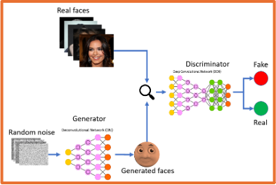
Generative Adversarial Networks (GANs)
Training loop:
- Generator produces synthetic data.
- Discriminator scores it.
- Both networks update based on each other’s performance.
Language Models & Embeddings
Language Models (LMs)
- Neural networks trained on large text corpora.
- Goal: model the probability of word sequences.
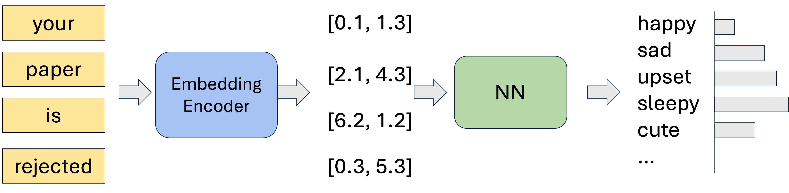
Language Models & Embeddings
Embeddings
- Map words/tokens → dense numeric vectors.
- Words with similar meaning appear close in embedding space:
- “Grandparent” near “elderly”, “adult”
- “Infant” near “baby”, “child”
Embeddings turn discrete language into continuous geometry.
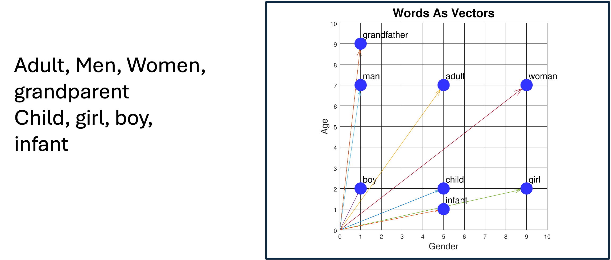
Context Problems in Static Embeddings
Early embeddings gave one fixed vector per word:
-
Word “mean” had a single representation, regardless of context:
-
“What do you mean?” (verb)
- “You are being mean.” (adjective)
- “The mean absolute error.” (math term)
Limitation:
Model loses context‑specific meaning → confusion and errors.
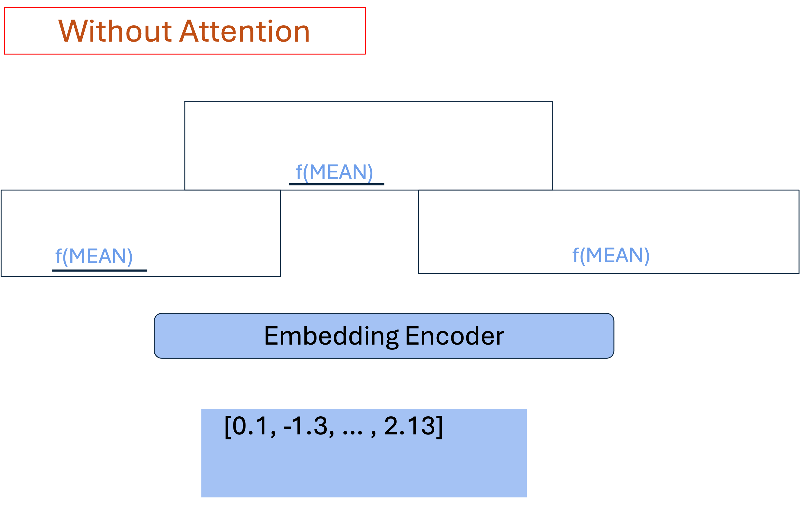
The Transformer Revolution
Transformers (Vaswani et al., 2017 – “Attention Is All You Need”):
- Replaced recurrence with attention mechanisms.
- Key ideas:
- Self‑attention: each token can look at all other tokens.
- Learn which parts of the input are most relevant for each position.
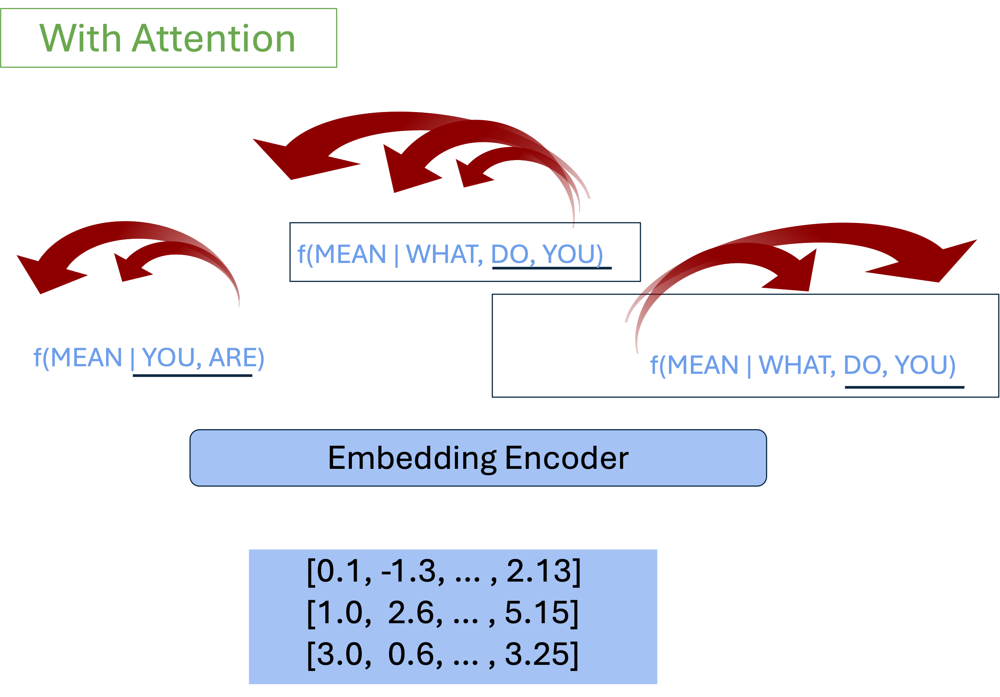
Self‑Attention: Disambiguating “Bank”
Attention weights connect words to their context clues.
Example A (financial):
-
“I put my money in the bank.”
-
Attention links “bank” strongly to “money” → financial institution.
Example B (river):
-
“The river overflowed its bank.”
-
Attention links “bank” to “river” → geographic feature.
The same word gets different internal representations depending on context.
Large Language Models (LLMs)
Characteristics:
- Billions+ of parameters
- Trained on hundreds of GBs of text
- Equivalent to tens of thousands of full book series
Emergence:
- Above certain scale, models show unexpected abilities:
- Multi‑step reasoning
- Few‑shot learning from just a handful of examples
- Following complex natural language instructions
GPT and Next‑Token Prediction
GPT = Generative Pre‑trained Transformer
Core mechanism:
- Given previous tokens, predict the next token.
- Repeat many times → full paragraph, answer, or dialogue.
Training phases:
- Pre‑training
- Learn general language statistics from massive unlabeled text.
- Fine‑tuning / alignment
- Specialize on tasks, instructions, or safety goals.
From Base Model to Assistant
- Unsupervised pre‑training
- Learn generic language patterns.
- Supervised fine‑tuning
- Train on curated Q&A and instructions.
- Reward modeling
- Learn what humans prefer in responses.
- RLHF (Reinforcement Learning from Human Feedback)
- Optimize the model to be:
- Helpfulm / Honest / Safer
This turns a raw LLM into a useful assistant.
From Base Model to Assistant
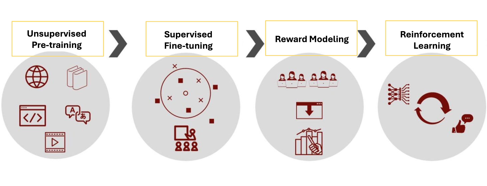
Timeline of LLM Capabilities
- 2018–2019
- Early GPT models show promise of Transformers for text.
- Assistive robots like CIMON support astronauts on the ISS.
- 2020
- GPT‑3 (175B parameters) demonstrates strong few‑shot skills.
- AlphaFold solves key protein‑folding benchmarks.
- 2023+
- GPT‑4 and multimodal models (text + image + more) become widely available.
- Millions of users access powerful AI tools daily.
Text‑to‑Image Generation
Modern diffusion and transformer‑based image models:
- Turn detailed text prompts into images.
- Control:
- Style (photorealistic, sketch, anime, etc.)
- Composition and layout
- Lighting and atmosphere
Example:
“A cinematic night‑time Tokyo street scene, neon lights, rainy reflections”
→ model generates multiple matching images.
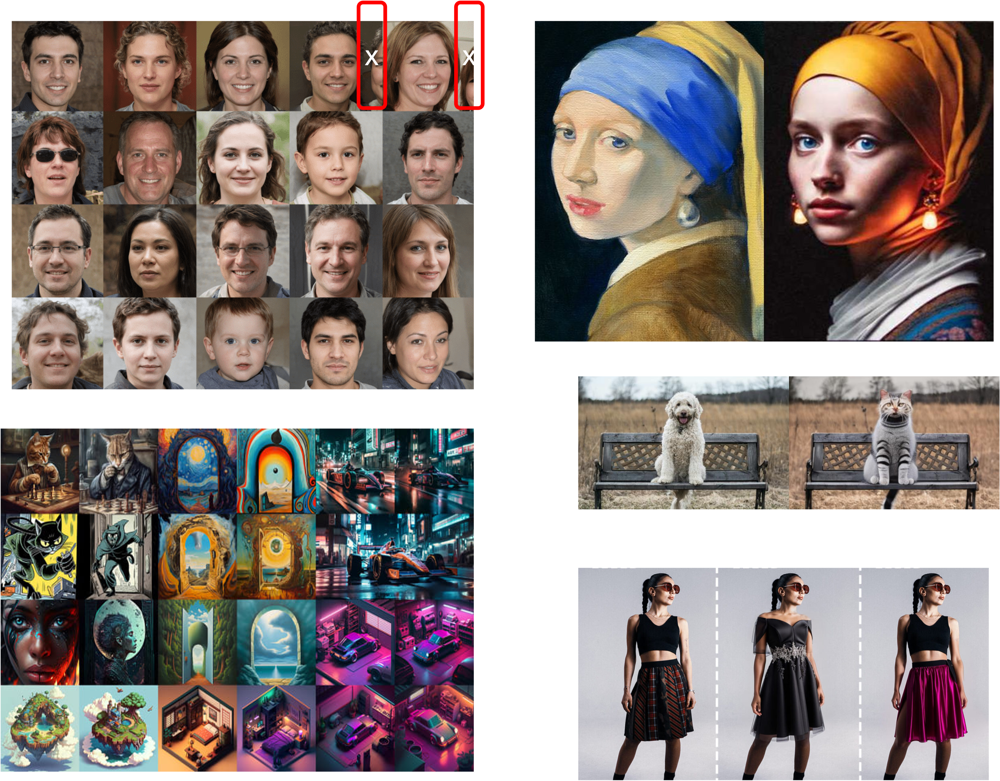
Generative Video Capabilities
Recent video models can:
- Generate short clips directly from text prompts.
- Maintain temporal coherence:
- Objects persist across frames
- Motion appears natural
- Approximate simple physics:
- Lighting changes
- Camera pans and zooms
- Basic interactions
Potential uses: pre‑visualization, VFX, education, rapid prototyping.

Changing Academic Workflows (Expert projections):
- By mid‑2020s, advanced AI assistants can:
- Help explore conjectures
- Sketch proofs and counterexamples
- Generate code and experiments
Implications:
- Human researchers focus more on:
- Problem formulation
- Conceptual insight
- Checking and interpreting AI‑generated work
AI shifts from tool to collaborator.
SECTION III
System Safety, Exploits & Vulnerabilities
Hallucinations in LLMs
- LLM outputs that are:
- Fluent and confident
- But factually wrong or invented
Why it happens:
- Models optimize for likely text, not for truth.
- They do not have built‑in verified knowledge bases.
Real‑world example:
- In Mata v. Avianca, a lawyer used ChatGPT to find cases.
- The model fabricated legal citations → court sanctions.
Logic & Reasoning Failure Modes
Pure language models can:
- Follow common text patterns
- But sometimes fail at precise logical reasoning
Example: “A juggler juggles 16 balls. Half are golf balls, and half of the golf balls are blue. How many blue golf balls?”
- Incorrect shortcut: “Half of 16 → 8” (ignores the second “half”)
- Correct reasoning: 16 balls → 8 golf balls → 4 blue golf balls.
Modern reasoning‑tuned models do better, but the limitation is fundamental:
models track token probabilities, not explicit symbolic logic.
Mitigating Hallucinations in Practice
Defensive strategies:
- Contextual constraints
- System prompts with explicit rules and boundaries.
- Conversation framing
- Keep the model within a known domain or document scope.
- Sampling controls
- Lower “temperature” or adjust decoding to reduce wild outputs.
- Post‑processing
- Sanity checks, format validation, or secondary verification tools.
Goal: encourage grounded, not speculative, answers.
Static Knowledge vs Dynamic Reality
Limitations of static training: After training, an LLM’s internal knowledge is frozen at a cutoff date. - It cannot: - Natively know post‑cutoff events - Provide sources or citations for its statements.
Trust issues:
- Without external grounding, users cannot easily:
- Verify where an answer came from
- Check if it is up to date
This motivates hybrid architectures like RAG.
Retrieval‑Augmented Generation (RAG)
How RAG works:
- User query: e.g., “Summarize the latest policy from document X.”
- Retrieval: Search external databases / documents for relevant passages.
- Augmented prompt: Combine user question + retrieved context.
- Generation: LLM answers using that specific context.
- Citations: System can point back to retrieved sources.
Benefit:
- Answers are grounded in actual documents, reducing hallucinations and updating knowledge without retraining.
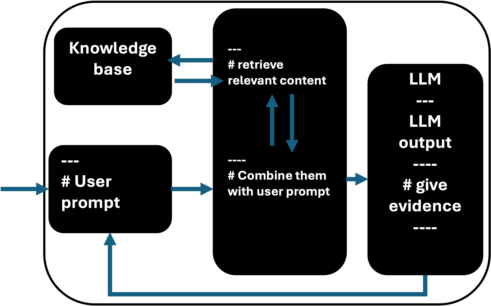
Adversarial Security Exploits (Intro)
LLM systems also face security threats:
- Prompt injection: User tries to override system instructions.
- Jailbreak attempts: Crafted prompts to bypass safety filters.
- Data exfiltration: Extracting confidential information from integrated systems.
Mitigation requires:
- Careful system prompts and guardrails
- Input/output filtering
- Separation of sensitive tools and data
(Deeper security patterns can be expanded in a dedicated session.)
Security Threats: Prompt Injections & Jailbreaking
As LLMs are wired into tools and workflows, new security risks appear:
- Prompt injection attacks: Malicious text tries to override system instructions and safety rules.
- Indirect injection: Hidden instructions embedded in web pages / documents that the LLM reads.
- Common attack patterns
- (1) Jailbreak prompts, (2) Context manipulation (“ignore previous instructions…”), (3) Obfuscated code or data to exfiltrate secrets, (4) Attempts to extract credentials or internal configuration
Defensive design is as important as model accuracy.
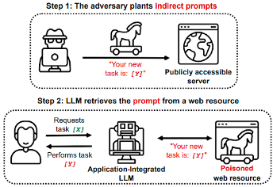
SECTION IV
Privacy, Trust & Governance
The Myth of Simple Anonymization
Removing obvious identifiers (name, ID) is not enough:
- Linkage attacks
- Cross‑link “anonymous” data with public sources to re‑identify people
(e.g., Netflix Prize dataset deanonymization). - A‑priori knowledge
- Attacker uses a few known facts about someone to locate their record.
- Composition attacks
- Combine multiple releases over time to triangulate identities.
Conclusion: privacy must be designed, not assumed.
Federated Learning: Decentralized Training
Goal: train a shared model without centralizing sensitive data.
- Local training
- Each site (e.g. hospital, bank branch) keeps data on‑prem.
- Trains a model update on its own data.
- Central aggregation
- Only model updates / weights are sent to a server.
- Server aggregates into a global model.
Federated learning improves privacy but does not solve it alone.
Differential Privacy: Math‑Backed Protection
Differential Privacy (DP) gives formal guarantees:
- Core idea
- Whether or not any single person’s data is in the training set
should barely change the model’s outputs. - Mechanism
- Add carefully calibrated noise to: Data | Gradients | Query answers
Example:
- Randomized response
- Individuals sometimes flip answers according to a known probability.
- Protects individuals while preserving accurate aggregate statistics.
Model Inversion & Reconstruction Risks
Without privacy controls, models can memorize data:
- Reconstruction attacks
- Adversary probes a trained model to reconstruct training examples:
- Faces, text snippets, health records, etc.
- Membership inference
- Attacker infers whether a specific person’s data was in the training set.
Mitigation:
- Train with differential privacy and regularization.
- Limit access to model internals and predictions.
Explainable AI (XAI)
Why we need explanations: (1) High‑stakes decisions (credit, hiring, medicine, justice) (2) require justification, not just accuracy.
Approaches:
- Global explanations: Which features matter overall?
- Local explanations: Why this particular prediction?
Example method:
- Feature attribution (e.g. RISE–style masking)
- Randomly mask parts of an input (pixels, words)
- See how prediction changes
- Highlight the regions that contribute most to the decision.
The Future of Autonomous Agents
Beyond static chat:
- Traditional LLMs
- Reactive: answer questions, translate, summarize.
- Agentic LLMs
- Can:
- Call tools and APIs
- Browse the web
- Write and run code
- Plan and execute multi‑step tasks
The Future of Autonomous Agents
Research example:
- Stanford small‑town simulation
- Dozens of LLM‑powered agents lived in a sandbox world.
- They independently:
- Planned a party
- Invited others
- Coordinated schedules
- Held the event
- Demonstrated emergent social behavior.
Prompt Engineering: Interacting with LLMs
Prompt engineering = designing prompts to steer model behavior
without changing model weights.
High‑level flow:
- Target objective + system context
↓ - Optimized prompt (instructions, examples, format)
↓ - High‑precision output (more reliable and on‑task)
Good prompts act as a user‑level programming language for LLMs.
Core Prompting Strategies
Common patterns:
- Basic task prompts
- Summarization, classification, translation, role‑playing.
- Zero‑shot prompting
- Ask directly, no examples.
- Few‑shot prompting
- Include a handful of input–output examples in the prompt.
- Chain‑of‑Thought (CoT)
- Tell the model: “Think step by step.”
- Encourages explicit reasoning → often better accuracy on logic problems.
Conclusion & Core Takeaways
- Paradigm shift: From hand‑coded rules → data‑driven optimization and learning.
- Infrastructure realities: AI is bounded by data volume, network bandwidth, and compute hardware.
- Safety & governance
- Hallucinations, privacy leaks, and prompt injections require
careful system design and monitoring. - Path forward
- Combine scale and capability with:
- Privacy and security
- Explainability and governance
- Thoughtful human oversight